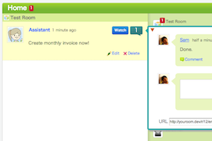
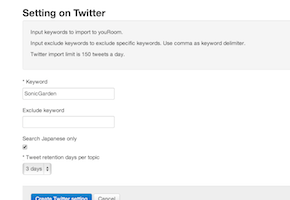

A competent assistant to support
your youRoom team activities.
All the cumbersome stuff in your team and project work that anyone can do should be left to the computer. Enter youRoom Assistant--the virtual teammate who'll take care of all the pesky, repetitive stuff for you and your team.
-

Jam-packed with handy features like the reminder and tweet import functions that will enhance your youRoom experience.
-
All youRoom Assistant functions are provided free of charge. And it's easy to set up too!
Please leave me
tedious work.
How to Start Using youRoom Assistant
-
1
Navigate to the youRoom "Assistant" admin screen.
(Go to a room where you have admin rights > Manage Room > Assistant) -
2
Click on the "Use Assistant" button.
-
3
Clicking on the link above will bring you to an external page where you can configure the settings for each function.
Reminder
-
Let your Assistant remind you about the monthly tasks you have a tendency to forget!
It can be tedious to remember to carry out those repetitive but necessary monthly tasks. Tasks that are shared across the entire team? Even more wearisome!
p>With the youRoom Assistant's Reminder function, you can now store a message in advance to be posted on youRoom during a fixed date every month.
-

Comes with task progress visualization too!
Start the ball rolling on your tasks with your Assistant's monthly gentle reminder posts. Teams that are frequent users of youRoom should receive these messages naturally. An excellent tool for task management to begin with, youRoom is extremely compatible with the Reminder function.
You can use it to:
- Remind yourself to issue those monthly invoices.
- Instruct team members to remember to input their monthly expenses.
Configuring a Reminder:
-
1
Click on the "Create Reminder" link in the youRoom Assistant's settings page.
-
2
Enter your scheduled and message.
-
3
Click on the "Create Reminder setting" button, and you're done! Once the scheduled day arrives, you'll see your message being posted to youRoom.
Twitter Import
-
Collect and share tweets with your team!
It goes without saying that we're all interested in tweets about our products and services.
The youRoom Assistant can scan and obtain tweets with certain keywords inside and post them to youRoom at regular intervals.
The posted tweets can be shared among teammates. And if there's a tweet you wish to highlight, simply comment on the post. Fully utilize this youRoom function to support your users!
You can use it to:
- You can use it to:
- Collect tweets of an event using the hashtag.
Configuring Twitter Import
-
1
Click on the "Authenticate with Twitter" button to authenticate yourself with Twitter. (Only for the first time.)
-
2
Click on the "Create Twitter Setting" link in the youRoom Assistant's settings page.
-
3
Enter your settings.
-
4

Click on the "Create Twitter setting" button, and you're done!
Interconnectivity with Pivotal Tracker
-
Make more Agile software by linking Pivotal Tracker and youRoom up!
Teams developing software on Agile can now make fuller use of youRoom.
Pivotal Tracker is also the best request management tool for Agile development.
By integrating these two tools using the youRoom Assistant, your Agile software development can now go even faster than ever before.
-
Immediately convert youRoom discussions into tickets
In the event you wish to open a ticket on Pivotal Tracker for a youRoom discussion, entering the same information into Pivotal Tracker is no longer a dry and tedious process.
Automatically create Pivotal Tracker tickets with comments formatted in a particular way, by introducing the youRoom Assistant into your rooms!
The ticket will also contain the youRoom discussion URL in its description panel.
-
Get a hold of your development status on youRoom!
You'll receive notification on youRoom once your Pivotal Tracker tickets reach the next stage. Now you can have a better grasp of your product's development status by checking youRoom, instead of popping over to Pivotal Tracker for a look every now and then!
Configuring Pivotal Tracker Interconnectivity
-
1

Access Pivotal Tracker and check for the API Token displayed on your PROFILE page and the Project ID displayed in your Project page URL.
-
2
Navigate to the Assistant's room settings screen, enter the API Token and Project ID into the textboxes provided, and you're done!
-
3
Thereafter, you can now exchange information between Pivotal Tracker and youRoom. The format to use in your comments for converting youRoom discussions into Pivotal Tracker tickets is: #pivo:(ticket title)